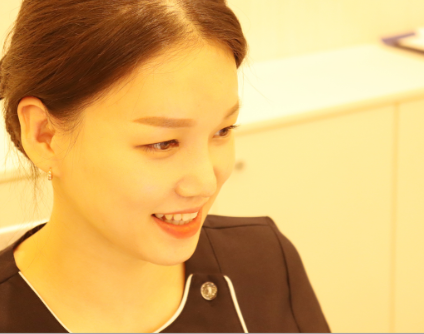

김태효탑내과를 찾아주시는 여러분께 진심으로 감사드립니다. 보다 건강한 내일을 위해 환자 여러분과 함께하는 탑내과가 되겠습니다.


최근(2020년)까지 경상대학교 의과대학 정교수로서 많은 제자를 양성하였으며, 경상대학교병원 소화기내과장 및 내시경세부전문의로 다년간의 풍부한 경험으로 환자분들께 안전한 검진과 정확한 검사를 제공하겠습니다.

대학병원에서 사용하던 의료장비와 동일한 기기들을 갖추어 환자분들의 진료에 부족함이 없도록 노력하였으며, 향후에도 신의료기술을 적시에 도입하여 질 높은 의료서비스를 제공하겠습니다.

김태효탑내과는 대학병원 출신의 간호사(RN)가 함께 근무하여 보다 높은 의료서비스를 지향하고, 안전하고 수준 높은 관리를 제공하고 있습니다.
저희 병원은 사진처럼 밝고 깔끔한 분위기로, 내부 시설을 항상 청결하게 유지하기 위해 최선을 다하고 있습니다. 또한 대학병원급의 최신 의료장비를 도입하여 높은 수준의 진료를 제공하며, 장비는 항상 소독하고 일회용 소모품을 사용하여 환자분들의 위생관리를 최우선으로 신경쓰고 있습니다.